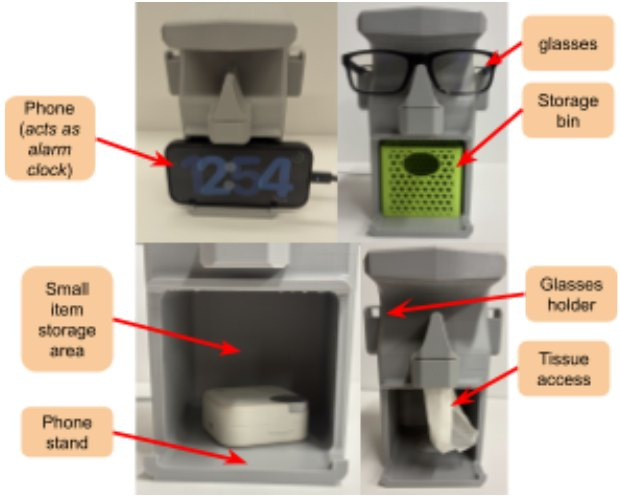
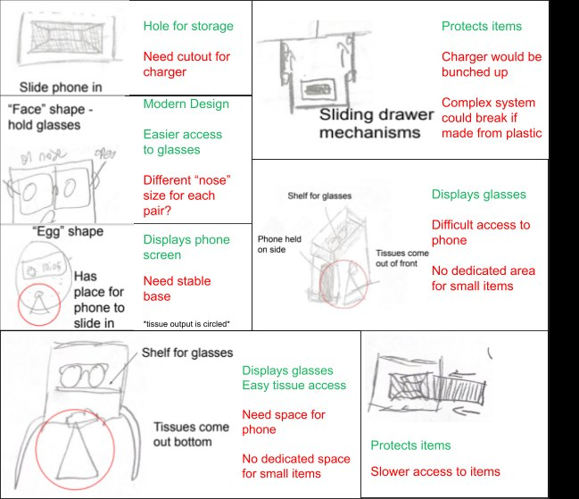
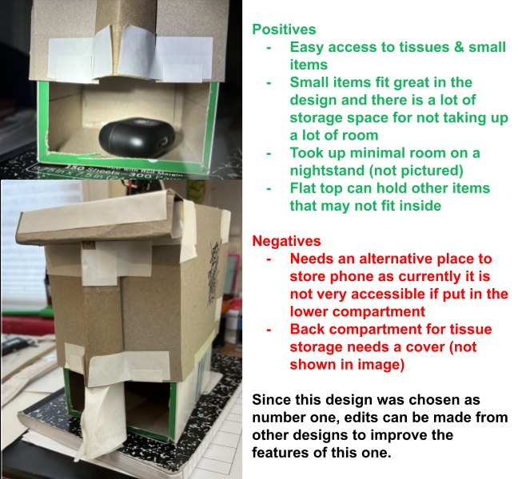
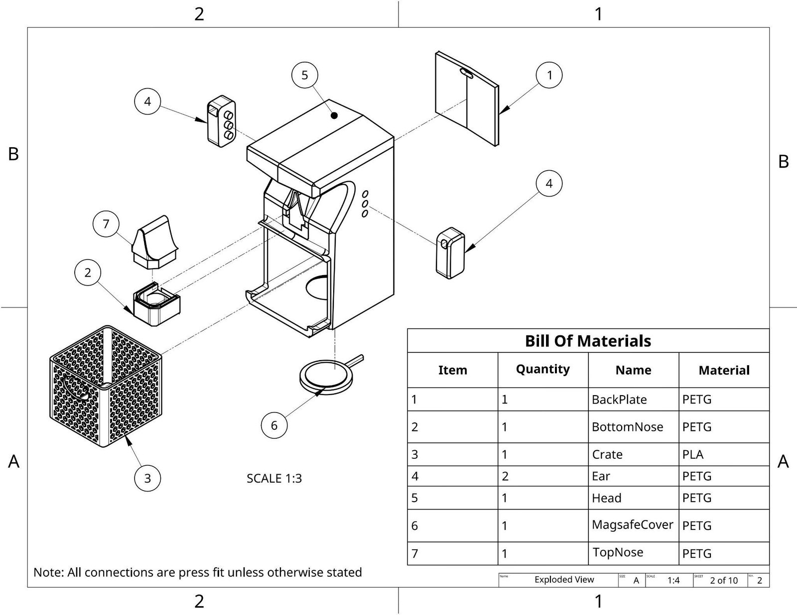
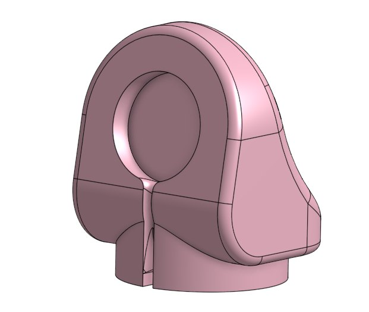
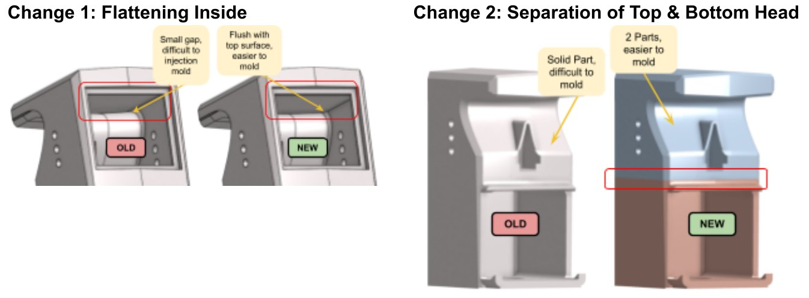
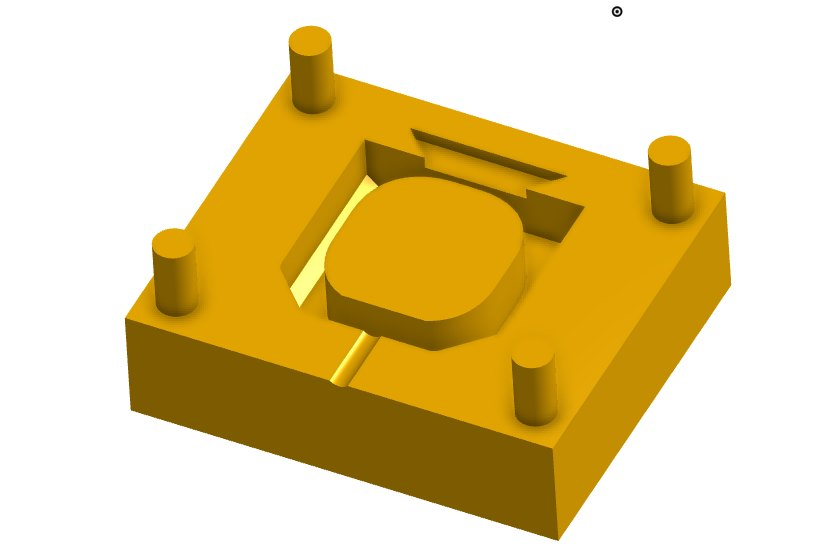
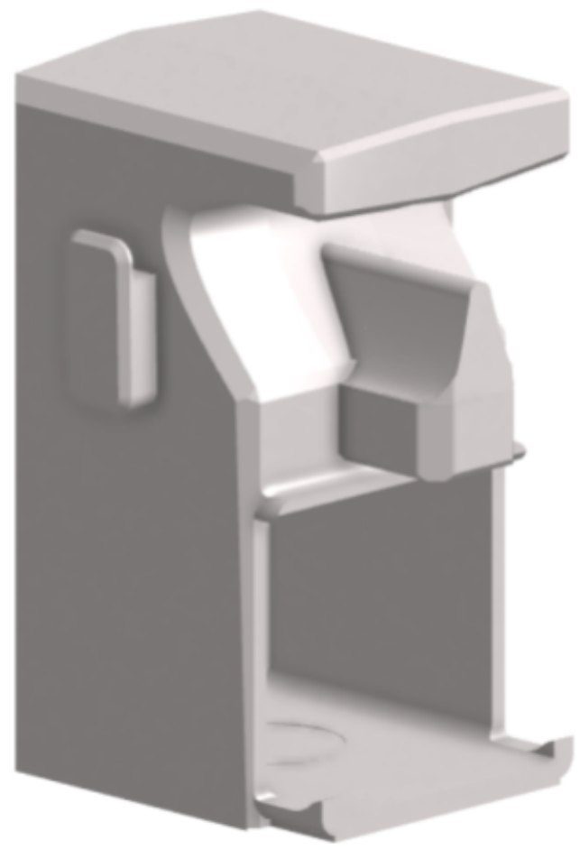

3D-printed nightstand organizer
One printed piece that holds a phone, chargers, glasses and tissues, taken from user survey to working prototype to an injection-molding redesign.
- Context
- IB Design Technology HL
- Completed
- May 2025
- Prototype
- 8 printed parts, press-fit
- Tools
- Onshape, Bambu Studio, Bambu Lab P1S

The problem
Nightstands collect a phone, chargers, glasses, tissues and an alarm clock in a small space, which leads to tangled cords and clutter. Wireless charging stations are a common fix, but the source I cited found they use about 47% more power than a cable, and new EU rules on standard chargers make products with built-in chargers go obsolete. I wanted an organizer that works with the user's own cables.
Requirements
I surveyed high school students on what they keep on their nightstand. Chargers, phones and glasses came out on top, so those drove the spec:
- Hold two of the user's own chargers, a pair of glasses, and at least 45 tissues (half a standard box).
- Fit on a standard nightstand without taking more room than the loose items did.
- Look modern: clean lines, neutral color, smooth surfaces, and still be a talking point.
- Print on a standard FDM printer with a 256 × 256 mm bed, in no more than two build plates.
Concepts and testing
I sketched four concepts, modeled them in Onshape and built cardboard mockups of each to check that every item fit and that the footprint suited a real nightstand. I then ran a visual survey where people rated each design from 1 to 10 and suggested changes.


| Design | Average rating | What users asked for |
|---|---|---|
| 1 | 5.4/10 | A pointed top; a rotating interior to lock items in |
| 2 | 4.8/10 | More side compartments |
| 3 | 2.2/10 | Keep the slanted phone rest for another design |
| 4 | 8.6/10 | Turn the "mouth" into a drawer; close off the back so tissues don't fall out; add a phone rest |
Design 4 won clearly, and its weak points were easy to fix. Design 1 was too hard to produce, design 2 took the most space with no dedicated spot for each item, and design 3 made the glasses hard to reach. I carried design 3's slanted phone rest into the final design.
Prototype

- Eight parts: head, back plate, MagSafe cover, top and bottom nose, two ears, and a storage bin.
- Printed on a Bambu Lab P1S at 0.2 mm layer height and 15% infill.
- Main structure in PETG (about a 16-hour print), bin in PLA (about 2 hours).
- Assembled with press fits. The ears, back plate and cover tap in with a rubber mallet.
I also wrote a manufacturing plan covering slicing, printer prep, first-layer checks, cleanup and assembly, with a quality check and risk note for each step.

Results
| Test | Result |
|---|---|
| Fits every required item at once | 5/5 |
| Ease of use (most common rating) | 5/5 |
| Modern look (most common rating) | 8/10 |
| Better than their current setup (most common rating) | 4/5 |
Users asked for a drop-in glasses holder, more modular parts, a vertical phone mount, a watch charger and a light. I redesigned the glasses slot with an open top so it fits taller frames, and added a watch charger mount in the open space.

Designing for production
The last step was taking the design from one printed prototype to something a factory could make.
- Switched to injection molding: ABS for the structural parts for its stiffness, impact strength and dimensional stability, and HDPE for the bin.
- Designed the molds for every part, allowing for plastic shrinkage.
- Flattened the inside of the head to remove a small gap that would be hard to mold.
- Split the head into top and bottom pieces so each can come out of a mold.
- Planned batch production, starting at 250–500 units, based on demand for similar products on Amazon.


